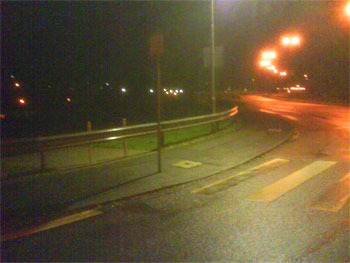
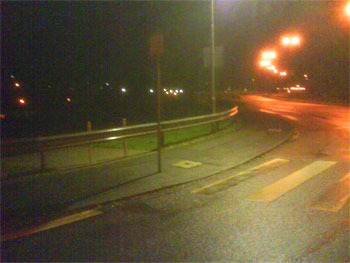

IntClub Bücherflohmarkt
am 14.12.06 findet im IntClub der TU ein Bücherflohmarkt statt. Wer dafür Bücher spenden möchte, kann diese von Montag bis Donnerstag von 14.00 bis 16.00 Uhr im IntClub (Gebäude 12-168) vorbei bringen. Der Erlös aus dem Verkauf wird an gemeinnützige Organisationen gespendet!
Quelle: RHRK Newsletter
 
